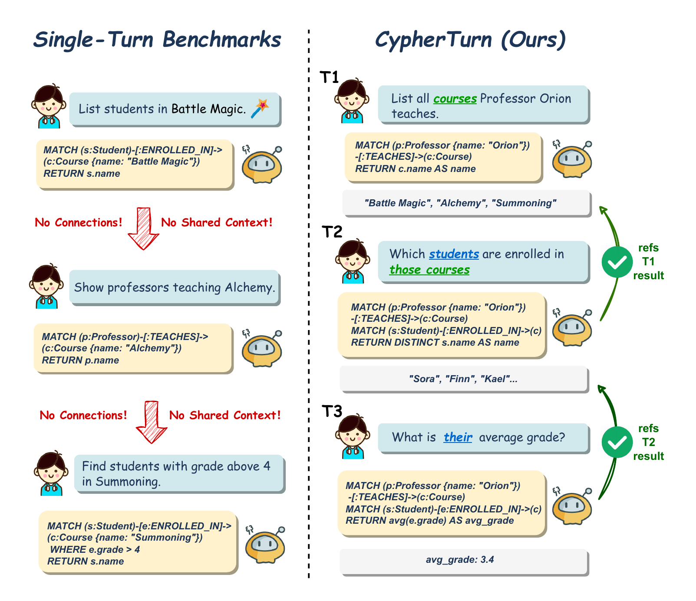

CYPHERTURN: A Multi-Turn Benchmark for Conversational Text-to-Cypher Evaluation and the Autonomy Divergence
Conference on Empirical Methods in Natural Language Processing (EMNLP) 2026
A conversational Text-to-Cypher benchmark that evaluates cross-turn reasoning and error management under guided and autonomous agentic protocols.